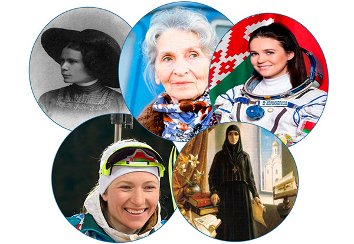

Калі паспрабаваць уявіць Беларусь у жаночым абліччы, перад вачыма паўстае не проста вобраз маці ці працаўніцы... Гэта дзіўнае спалучэнне нязломнай стойкасці і ціхай, светлай летуценнасці, дзе жанчына як векавы дуб у полі: карані яе ідуць у глыбіню вякоў, жывячыся сілай продкаў, а крона цягнецца да неба, імкнучыся да ўзвышанага.
Дом беларускай жанчыны распасціраецца ад Белавежскай пушчы да Палесся, ад Старога замка ў Гродне да Сафійскага сабора ў Полацку. Яна памятае запаветы бабуль, умее слухаць цішыню балот і лясоў, ведае цану кавалку хлеба. Гэтая сувязь з зямлёй дае ёй неверагодную цягавітасць.
Захавальніцы спадчыны
Жанчыны традыцыйна лічыліся захавальніцамі хатняга ачага, сямейных традыцый і культурнай спадчыны. Яны перадавалі пакаленням народныя звычаі і традыцыі. Жанчына адыгрывала ключавую ролю ў развіцці чалавецтва на працягу ўсёй сусветнай гісторыі. Яе ўклад разнастайны і шматгранны — ад удзелу ў фарміраванні культуры да актыўнага ўплыву на палітычныя працэсы.
Гісторыя ведае такіх лідараў, як княгіня Вольга, Рагнеда, Анастасія Слуцкая, якія змянялі ход гісторыі. Нягледзячы на няроўнасць, жанчыны ўносілі ўклад у навуку (Соф’я Кавалеўская, Вольга Якушка).
«Напрыклад, Ефрасіння Полацкая, якая жыла амаль тысячу гадоў таму, прысвяціла сваё жыццё іншым... Не выпадкова яна — першая жанчына на тэрыторыі Беларусі, прылічаная да святых».
Выпрабаванні і подзвігі
У пачатку XX стагоддзя жанчыны былі пазбаўлены многіх правоў, але час ішоў, і яны пачалі актыўна змагацца за сваё месца ў палітычным і эканамічным жыцці. Але асаблівы подзвіг беларускія жанчыны здзейснілі ў гады Вялікай Айчыннай вайны.
- Амаль 14 000 удзельніц партызанскага руху ўзнагароджаны ордэнамі.
- 9 жанчын удастоены звання Героя Савецкага Саюза.
- Унікальная аперацыя па ліквідацыі гаўляйтэра В. Кубэ была ажыццёўлена А. Мазанік, М. Осіпавай і Н. Траян.
Жанчыны рабілі ўсё: выхажвалі параненых, працавалі на заводах, былі сувязнымі. Імёны многіх невядомыя, але іх праца была прадыктавана веленнем сэрца, а не жадай славы.
Сучасныя вяршыні
У сучасным свеце ролі пашыраюцца: эканоміка, бізнес, адукацыя, навука. Мы ганарымся імёнамі: Алаіза Пашкевіч, Соф’я Панкова, Любоў Хатылёва, Францішка Урсула Радзівіл.
На спартыўных арэнах ззяюць свае зоркі:
- Вольга Корбут — легенда гімнастыкі.
- Дар’я Домрачава — чатырохразовая алімпійская чэмпіёнка, Герой Беларусі.
- Юлія Несцярэнка — «белая маланка» з Брэста.
- Арына Сабаленка — першая ракетка свету.
Стрыжань нацыі
У чым жа сакрэт беларускай жанчыны? Адказ просты і неспасцігальны адначасова. Гэта адно цэлае, дзе карані сталі крыламі, а крылы пусцілі карані. Яна ляціць, але заўсёды ведае, куды вярнуцца. Яна стаіць, але заўсёды гатовая ўзляцець.
Пакуль б’ецца сэрца жанчыны — сэрца, якое б’ецца для сям’і і дзяцей, — жывая Беларусь. Гэта і ёсць сапраўдная беларуская магія: ціхі, светлы і непераможны стрыжань нацыі.